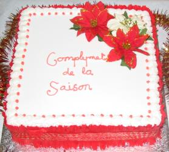

Sèrvice dé Neu Léçons et Cantiques dé Noué
dans l'Églyise dé St.-André
Sanm 'di lé 3 d'Dézembre 2005 à 7h30 du sé
Madame Joyce Gilbert s 'en va faithe la prièthe et annoncer les cantiques
Jésû est Né
Priéthe
Notre Père (chanté par lé Tchoeu)
O Pétite Ville de Béthléhem
Preunmié Léçon: Genêse Ch.3 vv. 8 à 15 - Mde Enid de Gruchy
Parmi la G'lée d'Hivé
Deuxième Léçon: Esaie Ch.9 vv. 2 à 7 - Mde. Anne Herrod
Le Fis dé Marie (chanté par l's Êtudgiants)
Traîsième Léçon: Esaie Ch.11 vv. 1 à 5 - Mde. Margaret Perrée
Atout Jouaie dans l'Temps Jadis
Quatrième Léçon: St.-Luc Ch.l vv. 26 à 38 - M. Clifford Laisney
O Tchi Douoche Niet
Chîntchième Léçon: St.-Matchi Ch.l vv. 18 à 23 - M. David Perrée
Taîs'-ous, taîs'-ous, viyiz lé p'tit êfant (lé Tchoeu seulement)
Siêxième Léçon: St.-Luc Ch.2 vv. 1 à 7 - Mlle. Lucy Le Gallais
Sus l'Coup d'Mînniet
Septième Léçon: St.-Luc Ch.2 vv. 8 à 20 - M. Ted Syvret
Solo: (Mde. June Le Rossignol)
Huitième Léçon: St.-Matchi Ch.2 vv. 1 à 11 - Mde. Joyce Haines
Tchi bieau nom
Neuvième Léçon: St.-Jean Ch.l vv.1 à 14 - Mde. Barbara Le Geyt
À Travèrs les Montangnes
Èrmèrques et Collecte en faveur dé l'Églyise
Lé Cantique du Sussex
Bénédiction
Jésû est né
Louangez lé Seigneur, Jésû est né;
Car dans eune êtabl'ye l'êfant divîn
Annoncé des anges, mèrtchi d'l'êtaile;
Not' Sauveur fut né à Bethléhem!
Chantez auve les anges, chantez d'la paix,
Qu'les cieux rétentissent d'amour et d'jouaie!
Chantez auve les anges dé not' Sauveur!
Êfant dé Marie, fis du Seigneur!
Les mages et bèrgers agenouoillis là,
L'âne et les brébis, la biche, lé ch'va,
Adorant l'êfant sus l'fain couochi,
La glouaithe du Bouan Dgieu lîsant l'tou d'li!
Chantez auve les anges, chantez d'la paix,
Qu'les cieux rétentissent d'amour et d'jouaie!
Chantez auve les anges dé not' Sauveur!
Êfant dé Marie, fis du Seigneur!
Bethléhem dormait, èrpos profond,
Quand l's anges apportîtent à toutes nâtions,
Nouvelle dé l'êfant; prannant sus li,
Les péchés ênormes du monde entchi.
Chantez auve les anges, chantez d'la paix,
Qu'les cieux rétentissent d'amour et d'jouaie!
Chantez auve les anges dé not' Sauveur!
Êfant dé Marie, fis du Seigneur!
Les anciens prophètes l'avaient prédit,
Chu sé-là l'mithacl'ye fut accomplyi!
Chantez vos cantiques à Dgieu anniet,
Louangez lé Seigneur, Jésû est né.
Chantez auve les anges, chantez d'la paix,
Qu'les cieux rétentissent d'amour et d'jouaie!
Chantez auve les anges dé not' Sauveur!
Êfant dé Marie, fis du Seigneur!
Nouotre Péthe
Nouotre péthe, tch'es dans les cieux,
Qué Tan nom sait saint,
Tan règne veinge,
Ta volanté sait faite sus la tèrre comme au ciel.
Donne-nous aniet nouot' pain dé touos les jours et pardonne-nous nouos péchés,
Comme j'pardonnons ès cheins tchi nouos ont offensés;
Et né nouos laîsse pon tchaie dans la tentâtion.
Mais d'livre-nous du ma,
Car lé règne T'appartcheint, et l'pouver et la glouaithe, à tout janmais.
Âmen
O pétite ville dé Béthléhem
O pétite ville dé Béthléhem
Tu'es couochie trantchilement.
Lé ciel èrlit sus tan dormi
Bein silencieusément.
Mais v'là tchi r'lit dans tes sombres rues
La leunmiéthe êtèrnelle,
L'êffrai, l'espé dé châque année
Lus r'trouvent souos ches êtailes.
Jésû est né d'la Vièrge Mathie!
Sus la tèrre coumme ès cieux,
Les hoummes au liet, les anges au dget,
Èrchèvent l'amour dé Dgieu.
Procliâmez, êtailes du matîn,
La naîssance du Saûveux!
Chantez auve jouaie à Dgieu, not' Rouai,
Qu'Sa paix sait ouï achteu!
Bein trantchilement, bein trantchilement,
La mèrvelle appathaît,
Lé don dé Dgieu à châque humbl'ye tchoeu,
Lé présent dé Sa paix.
Jé n'ouïyons pon Sa tape à l'us
Siez nous, des pouôrres pécheurs,
Mais châque esprit tch'a fouai en Li
Èrchait l'saint vîsiteur.
O p'tit êfant dé Béthléhem,
Siez nous, Tu'es v'nu d'meuther.
Hale tout hèrtchîn, et entre ichîn:
Sai né en nous aniet.
J'ouïyons l'assembliée angélique
Tchi chante la bouonne nouvelle,
Car il est v'nu, lé p'tit Jésû,
Not' Rouai Emmanuel!
Genêse
Chapitre 3 Vèrsets 8 à 15
Et i' ouïtent dans la fraîcheur du jour, la vouaix dé l'Êtèrnel Dgieu, tchi s'prom'nait dans l'gardîn. Et Adam et sa femme s'muchîtent dé d'vant la fache dé l'Êtèrnel Dgieu, parmi les bouais du gardîn.
Mais l'Êtèrnel Dgieu criyit à Adam et li dit, "Où'est qu'tu est?"
Et i' rêponnit, "J'ai entendu ta vouaix dans l'gardîn et j'ai ieu peux, car j'tais nu; et j'mé sis muchi."
Et Dgieu li dit, "Tch'est qui t'a montré qué tu'étais nu? Est-che qué tu'as mangi du bouais qué J't'avais d'fendu d'mangi?"
Et Adam rêponnit, "La femme qué Tu m'as donné pour être auvec mé, m'a donné du fruit du bouais, et j'en ai mangi."
Et l'Êtèrnel Dgieu dit à la femme, "Pourtchi qué tu'as fait chenna?" Et la femme rêponnit, "Lé sèrpent m'a seduite, et j'en ai mangi."
Et l'Êtèrnel Dgieu dit au sèrpent, "Pa'ce qué tu'as fait chenna, tu s'sa maudit entre touos l's annimaux et entre touos les bêtes des clios; tu t'prom'nas sus ta ventre, et tu mange'geas la poussièthe tous les jours d'ta vie,
et j'mettrai dé l'ennmité entre té et la femme, entre tes d'scendants et les d'scendants dé la femme, et ses d'scendants t'écras'saient la tête, et tu les bless'sa au talon."
Parmi la g'lée d'hivé
Parmi la g'lée d'hivé
I' ventait si fraid
L'ieau coumme d'la pièrre sembliait
La tèrre coumme du fé
I' tchiyait d'la né sus né
Né sus né
Parmi la g'lée d'hivé
Y'a bein des années
Ni chu monde ni l'Paradis
N'est trop humbl'ye pouor Li
Dgieu aime tant l'monde entchi
Qu'I' donnit San Fis.
Parmi la g'lée d'hivé
L'êtabl'ye 'tait assèz
Pouor not' Dgieu, Rouai des Rouais -
Chu p'tit saint bébé.
Tch'est qué j'peurs Lî donner,
Eune pouôrre âme coumme mé?
Si j'tais iun des bèrgers,
J'donn'nais un angné.
Si j'tais iun des Trais Rouais,
Jé Lî f'thais honneu.
Tout chein qué j'peurs donner,
Jé Lî donne - man tchoeu.
Esaie
Chapitre 9, Vèrsets 2 à 7
Tu'as multiplié la nâtion, tu' as augmenté sa jouaie - i' lus rêjouithont d'vant té, comme nou s'rêjouit dans l'temps de l'avout, ou quand nou fait un partage.
Pa'ce qué tu'as mîns l'fardé qu'i' portait en miots, et l'bâton auvec tchi ordinaithement nou li bâttait sus l's êpaules, comme tu fis aujour de Madian.
Car tout combat des siens qui s'battent se fait auvec tumulte, et lus habits sont tachis d'sang, mais chennechîn est comme quand l'feu passe et tout est réduit à chendres.
Car l'Efant nos est né, lé Fis nos a 'té donné, et l'empire a 'té posé sus s'n êpaule, et san nom es'sa l'Admithablye, lé Conseiller, lé Dgieu fort, lé Puissant, lé Péthe dé l'êtèrnité, lé Prînce d'la paix.
Et i'n'y etha pas d'fîn à la grandeur dé l'empire, ni à la prospéthité du trône dé David et dé san régne, pour l'êtablyi dans la justice au présent et pour tréjous. La jalousie dé l'Êtèrnel des armées f'tha chenna.
Lé Fis d'Marie
Y'a bein longtemps à Bethléem,
d'après chein qu'la Bibl'ye nos dit,
lé fis d'Marie, Jésû Christ,
fut né lé jour dé Noué.
Êcoutez les Anges qui chantent,
Un nouvieau Roué est né.
Et l'homme vivra êtèrnellement
à cause du jour dé Noué.
Trompettes sonnent et les Anges chantent,
Êcoutez chein qu'i' dîsent:
Qué l'homme vivra êtèrnellement
à cause du jour dé Noué.
Gardant lus troupieaux à l'ouvèrt,
Les bèrgers ouîtent un chant au liain,
Vîtent eune êtaile parfaite
Qui brillait dans lé ciel si bein.
Et Joseph et sa femme Marie
Vîntent à Bethléem chutte niet,
Et n'pûtent pas trouver même eune chambre
Où'est qu'l'êfant pouvait être né.
Êcoutez les Anges qui chantent,
Un nouvieau Roué est né.
Et l'homme vivra êtèrnellement
à cause du jour dé Noué.
Trompettes sonnent et les Anges chantent,
Êcoutez chein qu'i' dîsent:
Qué l'homme vivra êtèrnellement
à cause du jour dé Noué.
Bétôt i' trouvîtent un p'tit coin,
Et là, dans eune êtabl'ye sombre,
Auvec les bêtes pour compangnie,
Jésû fut né au monde.
Y'a bein longtemps à Bethléem,
D'après chein qu'la Bibl'ye nos dit,
Lé fis dé Marie, Jésû Christ,
Fut né lé jour dé Noué.
Êcoutez les Anges qui chantent,
Un nouvieau Roué est né.
Et l'homme vivra êtèrnellement
à cause du jour dé Noué.
Trompettes sonnent et les Anges chantent,
Êcoutez chein qu'i' dîsent:
Qué l'homme vivra êtèrnellement
à cause du jour dé Noué.
Esaie
Chapitre 11 Versêts 1 à 5
Mais i' sortitha un r'jeton du trône d'Isaï, et un surgeon craîtra d'ses rachines.
Et l'Esprit dé l'Êtèrnel erpos'sa sus li, l'Esprit dé sagesse et d'întelligence, l'Esprit dé conseil et d'forche, l'Esprit de science et d'la crainte dé l'Êtèrnel.
Et i' li f'tha senti la crainte dé l'Êtèrnel, tellement qu'i' n'juge'ga pas par chein qu'i' vait, et i'n' condamn'na pas sus un ouï-dithe.
Mais i' jugetha auvec justice les p'tits, et i' condamnétha auvec întégrité pour souost'nîn les debonnaires d'la tèrre, et i'frapp'tha la tèrre par lé bâton d'sa pathole, et i' f'tha mouothi lé méchant par lé soufflye dé ses lèvres.
Et la justice s'sa la cheintuthe d'ses reins, et la fidelité la cheintuthe d'ses fliancs.
Atout jouaie dans l'temps jadis.
Atout jouaie dans l'temps jadis,
L's anciens tch'étaient rêvilyis
Vîdrent là lueu d'la belle êtaile
Tch'êcliaithait lé c'min du Ciel;
O Bouan Dgieu, donne-nous l'avis
Dé Té Siéthe toute nouotre vie.
Comme i' suivîdrent la lueu,
Tchi les m'nit jusqu'au Saint Lieu,
Ou'est tch'i' pûdrent lus agenouoilli,
Pour adouother l'Chièr Pétit
Tchi d'vînt pus tard le Sauveux.
Dé Toutes âmes souos les Cieux.
Il' apportîdrent des présents
Dé grand' valeu' et d'l'enchens;
Ch'est à nous dé siéthe lus pas,
Et d'nouos comporter 'chîn bas,
D' manniéthe a Lî présenter
Nouot' amour et nouot' respé
O chièr Jésûs, â châque jour,
Veil'yes sus nous avec amour,
Et à l'heuthe du drain soupi
Erchai-nous dans l'Paradis
Où'est tchi' n'y'a plieurs ni mînséthes,
Dans la glouaithe dé Tan Sanctuaithe.
Là, dans l'bonheu et la jouaie,
Matîn, méjeu, arlévée,
Dé Ta Présence, et des Anges,
J'pouôrrons T'offri nouos louanges
Et chanter l's allélûias
Auve lé Sanctus d'ichîn bas.
L'Êvangile sélon Saint Luc
chapitre 1, vèrsets 26-38
Ch'tait dans l'siexième mais que Dgieu env'yit l'Ange Gabriel dans eune ville dé Galilée, nommé Nazareth, à eune vièrge qu'était engagie à un homme app'lée Joseph dé la fanmille dé David; et chutte vièrge 'tait app'lé Marie.
Et l'Ange, ayant entré dans la pliaiche ou'est qu' Marie s'trouvait, lyi dit, "Je té salue, té qui est r'chue en grâce; lé Seigneur est auvec té; tu'es bénie parmi les femmes."
Et viyant l'Ange, ou fut troubliée par ses patholes, et ou pensit en li-même tch'est qué chutte salutâtion voulait dithe.
Alors l'Ange lyi dit, "Marie, n'ayiz pon d'peux, car tu'as trouvé grâce dans les yièrs de Dgieu, et tu t'en va donner naîssance à un fis, à qui tu don'nas lé nom dé JESUS. I' s'sa remplyi d'pouvé et portétha lé nom dé Fis du Tout Puissant, et le Seigneur Dgieu li don'na lé trône dé David, sèn anchêtre.
I' règn'tha à tout janmais sus touos les d'scendants dé Jâcob, et i'n'y étha janmais dé fîn à san règne."
Alors Marie dit à l'Ange, "Comment qué ch'na peut s'arriver, viyant que je n'connais janmais d'homme?"
Et l'Ange lyi réponnit, "Le Saint Esprit travail'la en té, et la vèrtu du Tout Puissant té couvritha de s'n ombre; ch'est pourtchi qué lé saint êfant à tchi qu'tu don'nas naîssance es'sa app'lé lé Fis de Dgieu.
Et n'evchîn Elizabé, ta couôsinne, qui s'en va donner naîssance à un fis dans sa vieillèche, et ch'est ichîn la siexième mais d'la grossesse de chein qui 'tait app'lé stérile, car rein n'est împossiblye à Dgieu."
Et Marie li dit, "J'sis la sèrvante du Seigneur, qu'i' vienne à s'passer comme tu m'as dit." Et l'Ange dispathut, la laîssant seule auvec ses pensées.
Oh Tchi Douoche Niet
Oh tchi douoche niet! oh tchi sainte niet!
Tout est calme, tout est bé.
Viy'-ous la Méthe Vièrge dévant
San pétit, chu Saint Êfant?
Dors en paix céleste,
Dors en paix céleste!
Oh tchi douoche niet! oh tchi sainte niet!
Rouais et bèrgers veinnent Lé vaie.
L'air est pliein dé cantiques jouaiyeux
Chantés par les anges ès cieux:
Christ, not' Sauveur est né,
Christ, not' Sauveur est né!
Oh tchi douoche niet! oh tchi sainte niet!
Tout est calme, tout sé tait.
Viy'-ous ch't'Êfant adouothabl'ye
Couochi dans eune pouôrre êtabl'ye?
Ch'est lé Fis dé Dgieu,
Ch'est lé Fis dé Dgieu!
Oh tchi douoche niet! oh tchi sainte niet!
L'êtaile lît, tout est cliai.
L'Êfant dort en paix et souôrit
J'trouv'thons not' salut en Li:
Christ au monde est donné,
Christ au monde est donné!
L'Êvangile sélon St.-Matchi:
chapitre 1 vèrsets 18 à 23
Achteu la naîssance dé Jésus-Christ s'arrivit comme chennechîn.
Marie, sa méthe, ayant 'té promînse en mathiage à Joséph, i'fut dêcouvert qu'ou s'en allait aver un êfant par la vèrtu du Saint-Esprit d'vant que Joséph la prînse comme sa femme.
Mais Joséph, s'n homme, étant dé fort principes, et n'voulant pas lyi faithe la honte dé l'exposer au publyi, voulut la dêmathier en ségret.
Mais duthant l'temps qu'i pensait à ch'na, un ange du Seigneur li appathut dans un rêve, et li dit, "Joséph, fis dé David, n'ai pas d'peux de prendre Marie comme ta femme, car l'êfant à tchi qu'ou s'en va donner naîssance, s'en va être né du Saint-Esprit.
Et ou s'en va mettre au monde un fis, et tu li don'nas l'nom dé JESUS, car ch'est li tchi sauv'tha san peuplye dé ses péchès.
Tout chennechîn a 'té fait, pour qué la chose es'sait accomplyie qué lé Seigneur avait dit par lé prophète ;
V'là, eune vièrge s'sa encheinte, et ou don'na naîssance à un fis, et nou l'app'la EMMANUEL, tchi explyitchi veurt dithe, DGIEU AUVEC NOUS.
Taîs'-ous, taîs'-ous, viyiz lé p'tit êfant
Taîs'-ous, taîs'-ous, viyiz lé p'tit êfant
tchi dort paisibliément dans chu bèr.
Ouïyiz les vouaix des anges et hoummes chantant
là-haut dans lé Ciel et sus la Tèrre.
Car lé p'tit Jésû
à ces sé est v'nu!
Chu pouôrre p'tit êfant est lé Bouôn Dgieu!
Car ch'est man Saûveux
et man Rédempteux,
né dans eune êtabl'ye et dans man tchoeu.
Lé boeu né beûle pon et l'âne né brait pon
à g'nouors dans lus stâlles louangeant lus Rouai.
Agenouoill'-ous étout en contempliâtion
dé chutte séthée dé mèrvelles et jouaie.
Car lé p'tit Jésû
à ces sé est v'nu!
Chu pouôrre p'tit êfant est lé Bouôn Dgieu!
Car ch'est man Saûveux
et man Rédempteux,
né dans eune êtabl'ye et dans man tchoeu.
D'valés des clios, y'a des gardeurs d'brébis.
Des Mages ont apporté lus présents.
Humbliément offrons, auve l'esprit rêjoui,
Au p'tchiot nos louanges tchi montent coumme l'enchens.
Car lé p'tit Jésû
à ces sé est v'nu!
Chu pouôrre p'tit êfant est lé Bouôn Dgieu!
Car ch'est man Saûveux
et man Rédempteux,
né dans eune êtabl'ye et dans man tchoeu.
L'Êvangile sélon St.-Luc
chapitre 2, Vèrsets 1 à 7
I' s'adonnit dans chu temps-là qu'un êdit fut publiée d'la part dé César Auguste pour faithe un récensement dé tout l'monde.
Chu récensement fut fait quand Quirinus 'tait gouvèrneux d'la Syrie.
Ch'est en tchi, tout l'monde s'en fûdrent pour être enregistrés, chatchun dans sa ville.
Et Joséph s'en fut dé Galilée en Judée, ch'est à dithe, dé la ville dé Nazareth à la ville dé David nommée Bethléhem, pa'ce qu'il 'tait d'la même fanmille et d'la même lîngne comme David, pour être enregistré auvec Marie, sa femme, qu'attendait un êfant.
Et quandi qu'i' 'taient là, ou vint prête à accouôchie.
Et ou mint au monde san fis preunmyi-né, et ou l'frottit, et lé mint dans un bèr, pa'ce qu'i' n'y avait pon d'run pour ieux dans l'hôtell'lie.
Sus l'coup d'mînniet les bèrgers ouîtent
Sus l'coup d'mînniet les bèrgers ouîtent,
Chu vièr chant glorieux;
Des anges qu'i' s'penchaient vèrs la tèrre,
Jouant lus harpes d'or;
"Paix sus la tèrre, bouanne volanté
Es hoummes, du Tout Puissant"
Lé Monde entchi dévînt trantchille
Pour ouï lé chant des Anges.
Acouothe i' veinnent travèrs les cieux,
Lus ailes paîsibl'yes ouvèrtes;
Et lus musique Sainte et Céleste
Sonne si douoche sus la tèrre.
En d'sus ses pliaines et ses montangnes
Grâcieuses i' vont et veinnent;
Et tréjous par sus l'brit des hoummes
Les anges heutheuses chantent.
O vous, souos l'fardé dé la vie
Courbés dé vos mînséthes,
Vous qui peinez sus vot' quémîn
À pas pénibl'yes et longs;
Couothage, pour vous bonheu et jouaie
D'cendant sus d's ailes des cieux.
Erpos'-ous don dé temps en temps
Pour ouï lé chant des Anges.
V'là don! lé temps bein vite s'envole,
Coumme les prophètes disaient;
Auve châque siècl'ye nou-s-appraiche du jour
Quand touos s'sont rêunnis;
Quand j'connaîtrons la Paix suprême
En touos lieux, en touos âges,
Et qu'cieux et tèrre résonn'nont
Au chant des hoummes et Anges.
L'Êvangile sélon St.-Luc
chapitre 2, vèrsets 8 à 20
Et i'y avait dans l'même pays des bergers qui couochaient dans les clios et qui y gardaient lus troupieaux la niet.
Et soudainement un Ange du Seigneur lus appathut, et la glouaithe du Seigneur s'êcliatit tout alentou d'ieux, et i' fudrent bein êffrités.
Et l'Ange lus dit, "N'ayiz pon d'peux, car j'vos apporte la bouonne nouvelle d'eune grande jouaie qui s'sa pour tout l'monde.
Ch'est qu'aniet, dans la ville de David, lé Sauveur, tch'est lé Christ, lé Seigneur, vos est né.
Et ou lé r'connaîtrez comme chennechîn; ou trouv'thez le p'tit êfant bein embonnté et couochi dans un bèr."
Et à chu moment-là, i'y avait auvec l'Ange eune multitude dé l'armée céléste, louant Dgieu et disant;
"Glouaithe à Dgieu dans l'pus haut des cieux! La paix sus la tèrre, bouonne volonté envers l's hommes!"
Et auprès que l's anges s'fudrent èrtithés d'avec ieux dans l'ciel, les bergers s'entredîtent, "Allons jusqu'à Bethléem, et viyons chein qui s'est arrivé et que lé Seigneur nos a fait saver."
Et i' s'en fûdrent don en grand' prêsse, et i' trouvîtent Marie, et Josèph, et lé p'tit êfant qui 'tait couochi dans l'bèr.
Et l'ayant veu, i' publyîtent partout chein qui lus avait 'té dit concernant chu p'tit êfant.
Et touos les siens qui les ouïtent, 'taient dans l'admithâtion de chein qué les bergers lus disaient.
Et Marie consérvit toutes ches choses, et les gardit dans san tchoeu.
Et les bergers s'en èrvintent, glorifiant et louant Dgieu de tout chein qu'i' avaient ouï et veu, justement comme chein qui lus avait 'té dit.
L'Êvangile sélon St.-Matchi
chapitre 2, vèrsets 1 à 11
Jésus, étant né à Bethléem, ville dé Judée, dans l'temps du rouai Hérode, des Mages dé l'Orient arrivîtent à Jérusalem,
et i'd'mandîtent, "Où'est qu'est lé Rouai des Juifs qui est né? car j'avons veu s'n êtaile en Orient, et j'sommes v'nus pour l'adorer."
Le rouai Hérode, l'ayant apprint, il en fût bein gêné, et tout Jérusalem auvec li.
Et ayant reûnit touos les prîncipaux sacrificateurs et les scribes du peuplye, i' lus d'mandit où'est qué lé Christ dev'thait naître.
Et i' li dîtent, ''Ch'est à Bethléem, ville de Judée, car ch'est comme chennechîn qu' êcrit un prophète :
Et té, Bethléem, tèrre dé Judah, tu n'est pas la moindre entre les prîncipales villes dé Judah; car ch'est dé té que veindra le Conducteur qui paîtra Israël, man peuplye."
Donc Hérode, ayant fît v'nîn en ségrét les mages, i' lus d'mandit exactement du temps tch'il' avaient veu l' êtaile.
Et les env'yant à Bethléem, i' lus dit, "Allez, et dêcouvrez tout entouor chu p'tit êfant; et quand ous l'aithez trouvé, faites-mé lé saver, pour que j'piesse y aller étout, et que j'l'adore."
Ayant ouï lé rouai, i' s'en r'mîntent en route; et n'evchîn l'êtaile qu'il' avaient veu en Orient allant l'avant à ieux, jusqu'à chein qu'étant arrivé à la pliaiche où'est qué lé p'tit êfant 'tait, ou s'y arrêtit.
Et quand i' viyaient l'êtaile s'arrêter, i' fûdrent remplyis d'eune forte grande jouaie.
Et ayant entrés dans la maîson, i' trouvîtent lé p'tit êfant, avec Marie, sa mèthe, et i'li fitent adorâtion en lus prostérnant; et auprès aver ouvri lus trésors, i'li présentîtent des dons; dé l'or, dé l'enchens et d'la myrrhe.
.
Tchi bieau nom
Prannez lé doux nom dé Jésû,
Dites-lé dans toutes vos priéthes!
Par san pouvé, faites dé vot' mus,
Ch'est un nom dé jouaie et d'glouaithe!
Tchi bieau nom, tchi bieau nom
tchi bieau nom, tchi bieau nom
Ch'est lé nom du Fis dé Dgieu!
Tchi bieau nom, tchi bieau nom
tchi bieau nom,
Ch'est lé nom dé not' Saûveux!
Portez san nom pouor vot' êtchu,
Faites tout ch'qu'ou faites en san nom!
Ou trouv'thez qu'lé nom dé Jésû
Pilvâqu'tha la tentâtion!
Tchi bieau nom, tchi bieau nom
tchi bieau nom, tchi bieau nom
Ch'est lé nom du Fis dé Dgieu!
Tchi bieau nom, tchi bieau nom
tchi bieau nom,
Ch'est lé nom dé not' Saûveux!
Louangiz san nom dans vos chansons
Sus la tèrre et dans les cieux.
Auve les anges en adouothâtion,
Èrdites san nom niet' et jeu!
Tchi bieau nom, tchi bieau nom
tchi bieau nom, tchi bieau nom
Ch'est lé nom du Fis dé Dgieu!
Tchi bieau nom, tchi bieau nom
tchi bieau nom,
Ch'est lé nom dé not' Saûveux!
Adouothez san nom à janmais!
Des rouais, il est l'pus rouoya!
Mus qu'les titres dé ducs et dé rouais,
Ch'est lé pus bieaux nom qu'i' y'a!
Tchi bieau nom, tchi bieau nom
tchi bieau nom, tchi bieau nom
Ch'est lé nom du Fis dé Dgieu!
Tchi bieau nom, tchi bieau nom
tchi bieau nom,
Ch'est lé nom dé not' Saûveux!
Gardez san nom pouor vot' trésor.
Les sou n'sont qu'eune vannité.
Chu nom tchi contchéthit la mort
Est la seule richesse pouor mé!
Tchi bieau nom, tchi bieau nom
tchi bieau nom, tchi bieau nom
Ch'est lé nom du Fis dé Dgieu!
Tchi bieau nom, tchi bieau nom
tchi bieau nom,
Ch'est lé nom dé not' Saûveux!
Chantez san nom pouor vot' pliaîsi,
Sa jouaie s'sa vèrsée sus vous!
En san nom la vie est aîsie,
Ch'est lé pus grand nom dé tous!
Tchi bieau nom, tchi bieau nom
tchi bieau nom, tchi bieau nom
Ch'est lé nom du Fis dé Dgieu!
Tchi bieau nom, tchi bieau nom
tchi bieau nom,
Ch'est lé nom dé not' Saûveux!
L'Êvangile sélon Saint Jean,
chapitre 1, vèrsets 1 à 14
La Pathôle 'tait au c'menchement; la Pathôle 'tait auve Dgieu, et chutte Pathôle 'tait Dgieu.
Ou 'tait au c'menchement auvec Dgieu.
Toutes choses a 'té fait par lyi, et rein de chein qu'a 'té fait, n'a 'té fait sans lyi.
Ch'est en lyi qu'était la vie, et la vie 'tait la leunmiéthe des hommes.
Et la leunmiéthe lît dans les ténèbres, et les ténèbres ne l'ont janmais èrchue.
I'y avait un homme, tchi s'app'lait Jean, qui fût env'yé par Dgieu.
I' vint pour être lé témoin d'la leunmiéthe, pour que tous crûssent par li.
I' n'tait pas li-même la leunmiéthe, mais i' tait env'yé pour être témoin à la leunmiéthe.
Ch'tait la véthitablye leunmiéthe, qui êcliaithe touos les gens en v'nant au monde.
Ou 'tait dans l'monde, et l'monde a 'té fait par lyi, mais l'monde ne l'a pon connue.
Il est v'nu siez-sé, et les siens ne l'ont pon r'chu.
Mais à tous cheins qui l'ont r'chu, i'lus a donné lé drouait d'être faits êfants dé Dgieu; ch'est à dithe, ès siens qui craient en san nom;
qui n'sont pas nés du sang, ni d'la volonté d'la chai, ni d'la volonté de l'homme, mais qui sont nés de Dgieu.
Et la Pathôle a 'té fait chai, et à vêtchu parmi nous, remplyie d'grâce et d'véthité; et j'avons veu sa glouaithe, eune telle glouaithe qu'est l'chein du Fis eunique v'nu du Pèthe.
À travèrs les montangnes
À travèrs les montangnes
Et du d'sert i' veinnent,
Les Mages savants et sages
À sa pouôrre humbl'ye d'meuthe
D'eune ardeur dêvouée
De liain il' arrivent
Pour suivre sans tchestchion
Eune êtaile coumme dgide.
Là lus Rouai, lus Sauveur
Couochi, humbl'ye et doux,
Chutte veue qui les amène
Tout du long d'lus viage,
Pour êcliaithi tréjous
Les nâtions au liain,
Suivant lé c'mîn jouaiyeux
Condis par l'êtaile.
Té qui dans eune êtabl'ye
Au monde arrivit,
Qui à ch'teu en glouaithe
Sus touos rouoyaumes règne,
Èrtchil'ye les pouôrres païens
Des pays lointains
Qui n'ont janmais veu lithe
Ch't' êtaile sans pathelle.
En avant toute la niet,
Niet si seule et sombre,
Auve Ta sainte leunmiéthe
Lithant l'avant à ieux,
Mène-les, Juis et Païens,
Au r'pos êtèrnel,
Jannes et vièrs étout
Condis par T'n êtaile.
Lé Cantique du Sussex
Lés Chrétiens chantent chutte séthée d'Noué,
Pour ouï ches nouvelles dé grande jouaie.
Lés Chrétiens chantent chutte séthée d'Noué,
Pour ouï ches nouvelles dé grande jouaie.
Dans les cieux appathaîssent des anges,
Chantant, èrpétant lus louanges.
Et pourtchi qué j'devrons êt' triste,
Quand j'fêtons la naîssance du Christ?
Et pourtchi qué j'devrons êt' triste,
Quand j'fêtons la naîssance du Christ?
Quand not' Sauveur a libéthé
Les hommes d'la prison dé pêché.
La lueu nos a illeunminnés
Et fit chanter les anges chutte niet,
La lueu nos a illeunminnés
Et fit chanter les anges chutte niet,
"Glouaithe céleste et paix humaine
A ch't heu et pour tréjous.Amen."
Sa Grâce a chassé lé pêché,
Donnant la Vie et la Santé.
Sa Grâce a chassé lé pêché,
Donnant la Vie et la Santé.
Hommes et Anges, chantez auve jouaie,
Pour saluer lé nouvieau rouai!

Viyiz étout: